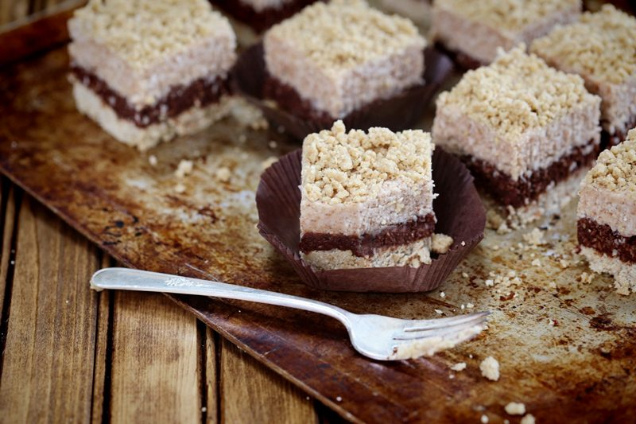
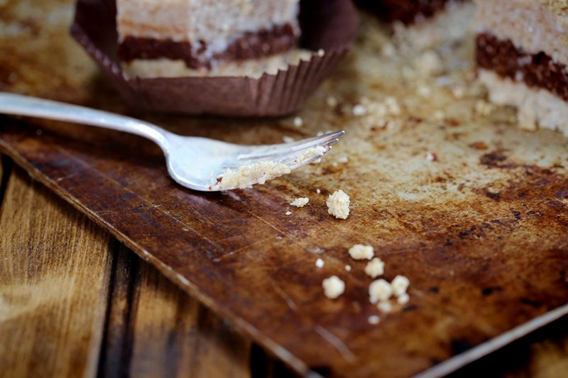
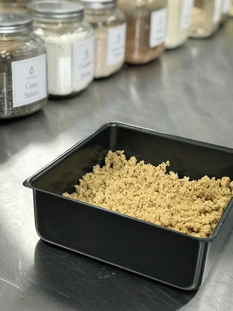
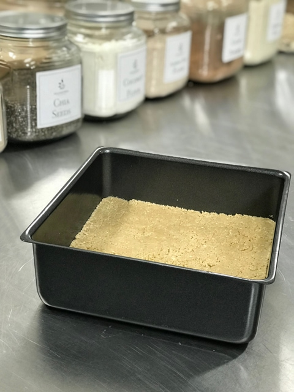
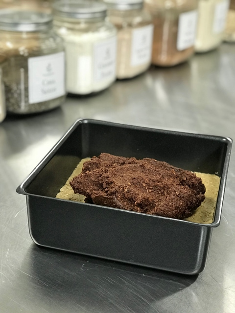
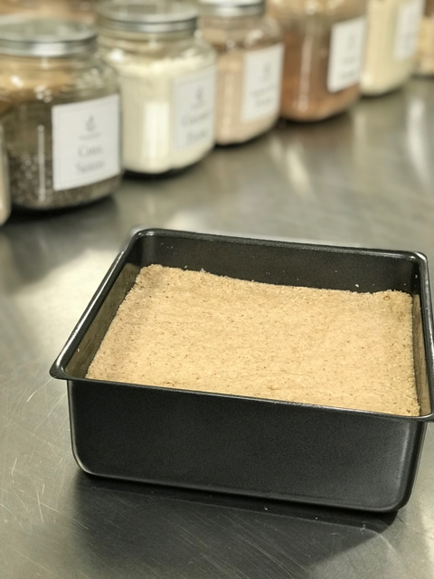

Espresso My Joy Bars
Deep within the core of our being, there is an infinite well of love, joy, peace, and wisdom. This is true for you and me, yet, how often do we get in touch with these treasures within us? Do we do it once a day? Once in a while? Or are we totally unaware that we have these inner treasures? I genuinely believe that they all go hand in hand, and by learning how to tap into them, we can grow and live a fulfilled life.

For me, I feel that I tap into my joy daily. When I work in the kitchen or sit down to design a recipe, it brings me a great calmness and inner peace that I can’t often reach with other activities. Perhaps it’s because my passion fuels my joy. It’s this passion that helps me to override the brain chatter that tries to keep me in a state of feeling overwhelmed with life in general. With the joy of creating and sharing recipes, I learn so much… not only about the ingredients that I am working with but also how to tap into people’s hearts… as well as their bellies.

Today my affirmation is, “I trust my inner wisdom. I follow my inner voice, always knowing that I am in the right place, at the right time, doing the right thing.” If you are unsure of how to tap into this affirmation, follow that inner voice that whispers, “make this recipe.” Your kitchen will put you in the right place and time. And once you share this sweet treat with others, you will know that you did the right thing.
Ok, so we have been talking about joy a little bit, now it’s time to shed some light on this recipe quickly. Trust me when I say that these bars will create quite a stir with your taste buds, having them dance with joy. There are several ways to go about making these bars; you can make just one, two2, or all three layers… you can use a larger pan then I did (8×8) if you wish to make them stretch a bit further. Mine turned out quite thick.
The only ingredient that I feel the need to touch basis on is the protein powder because it can either make or break the recipe. So first and foremost, you will want to love the flavor of the protein powder that you choose to use. There is no amount of disguising the flavor if it is offputting to you. If your protein powder is really sweet, you might need to make some adjustments in the recipe, so the bars don’t become too sweet. I have used both vanilla and unflavored with the same end delicious result. Each layer comes with its unique flavor and texture, so it’s quite the culinary experience. I hope you enjoy this recipe, and that joy overtakes your day today. blessings, amie sue
Ingredients:
8×8 baking pan
Shortbread Layer
Espresso Layer
- 1 cup (215 g) soft Medjool dates
- 1/2 cup (106 g) water
- 1/4 cup (77 g) maple syrup
- 1 tsp (12 g) vanilla extract
- 2 tsp (3 g) espresso powder
- 1/2 tsp (4 g) Himalayan pink salt
- 2 cups (150 g) shredded coconut
- 1/2 cup (50 g) raw cacao powder
Salted Caramel Layer
- 3 cups (260 g) shredded coconut
- 1 1/4 cups (160 g) raw pecans
- 3/4 (165 g) water
- 1/4 cup (32 g) lucuma powder
- 1 tsp (8 g) Himalayan pink salt
- 1 cup maple syrup or 3/4 cup (150 g) Markus Sweet, powdered
- 1/3 cup (97 g) coconut butter, softened
- 1 Tbsp (13 g) vanilla extract
Preparation:
Shortbread:
- Line an 8×8 baking pan with parchment paper or plastic wrap. Bring it up to the sides. Set aside.
- Place the almonds or oats in a food processor, fitted with an “S” blade, process to a medium flour texture.
- If you can’t eat oats, almonds are a good substitute. It will alter the flavorsome, but it will still be delicious.
- Add protein powder, salt, and pulse together.
- Add the coconut manna, sweetener, and flavoring. Process until it reaches a dough-like texture. If needed, add 1-2 Tbsp of water.
- Nead the shortbread with your hands, working everything together.
- Set aside 1 cup (151 g) of shortbread batter to sprinkle on the top bar.
- Press the batter into the pan that you had set aside. Press firmly and evenly. Set aside.
Espresso layer:
- Rehydrate the Medjool dates, but first, remove the pits (and discard them), then add enough warm water to cover them.
- Let them rehydrate for at least 15 minutes.
- Once ready to add to the recipe, drain the soak water, and hand-squeeze the excess water from them.
- Place the dates, water, sweetener, vanilla, espresso, and salt in the food processor, fitted with the “S” blade, and process until it becomes like a paste.
- Add the coconut and cacao powder, processing until well mixed.
- Press the espresso layer out evenly in the pan on top of the shortbread base. Set aside.
Salted caramel layer:
- In the food processor, fitted with the “S” blade, combine the coconut, pecans, lucuma, and salt. Blitz together until well combined.
- Add the sweetener, coconut butter, and vanilla. Process until the batter is well mixed and starts to stick together into a ball shape as it spins in the food processor.
- Spread the batter on top of the espresso layer, followed by a sprinkling of the shortbread batter on top.
- Chill overnight or freeze for 4+ hours. Basically, until it is firm enough to cut and handle.
Storage:
- Keep stored in an airtight container in the fridge for 1-2 weeks or in the freezer for up to 3 months.
-

-
Sprinkle the shortbread batter in evenly…
-

-
Press the batter in firmly and evenly.
-

-
Add the espresso layer…
-

-
Add the caramel layer and sprinkle some shortbread batter on top. Chill to firm. Enjoy
© AmieSue.com